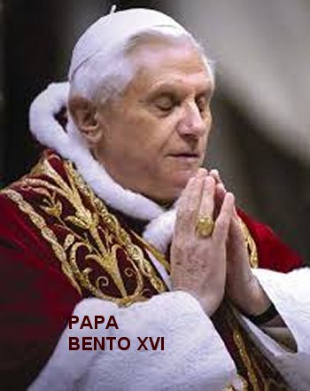
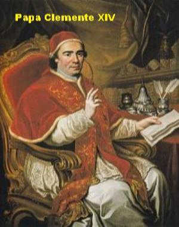
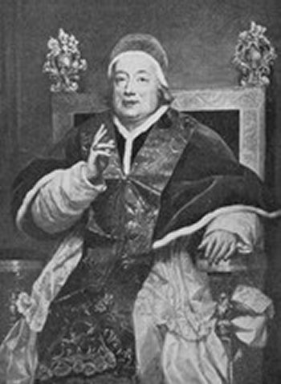
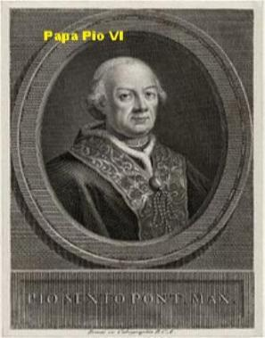
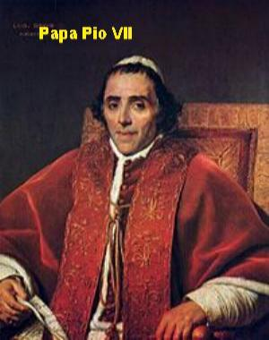
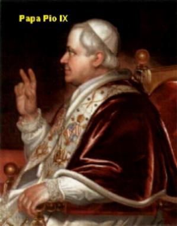
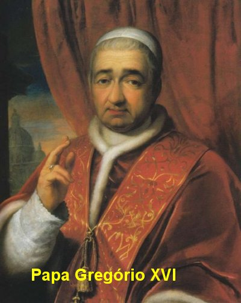

HOMEM DE CARÁTER
ÚLTIMO PROCESSO
Já fazia dez anos que Afonso
advogava e até então, nunca tinha perdido uma causa. Tornou-se célebre e
considerado invencível.
Em 1723 aconteceu um rumoroso processo nos tribunais do reino de Nápoles. De um lado estava o Grão-Duque de Toscana, e do outro lado o poderoso Duque Orsini. A propriedade que estava envolvida nesta causa era de valor astronômico. E por isso, a expectativa era muito grande.
Afonso foi convidado a defender os direitos do Duque Orsini. Durante meses leu o processo e se preparou diligentemente, a fim de conhecer todas as minúcias do mesmo. Ninguém duvidava que ele fosse o vitorioso.
No dia do julgamento, como sempre, Afonso fez a defesa da sua causa de modo sereno, seguro e imperturbável. Quando terminou o auditório extasiado de admiração se levantou e o aplaudiu estrondosamente.
Em meio aos aplausos, o advogado do adversário se aproximou de Afonso e pediu para falar. Baixou um grande silêncio na sala do júri. E então, ele abrindo sua pasta, retirou um documento de duas páginas, mostrou a Afonso e perguntou?
- “Leste este documento?”
Afonso correu os olhos sobre aquelas folhas e gelou, porque desconhecia que existia aquele compromisso do Duque Orsini com o Grão-Duque de Toscana. Percebeu sua distração e respondeu:
- “Tens razão, eu me enganei. Fui derrotado!”
Rompendo aquele aglomerado de amigos, parentes e clientes que o rodeavam, não falou nada e não quis ouvir ninguém, deixou rapidamente o Tribunal, e descendo a escada, disse:
- “Ó mundo, agora te conheço!... Tribunais não me verão jamais!”
O grande ídolo caiu do seu pedestal! Rodeado de seus admiradores, é humilhantemente derrubado da sua tribuna e cai fragorosamente. Sabe que há injustiça e corrupção em tudo aquilo, por isso ficou enojado. Foge da humanidade e foge de tudo, quer estar só, sem falar, sem comer e sem beber. E assim permaneceu durante três dias, sem atender os próprios pais.
SURGE O HOMEM DE DEUS
Aos poucos Afonso vai se recuperando... O seu orgulho ferido gradativamente vai se transformando em humildade. Sua fé e suas orações ganham mais força, ocupam um maior espaço no seu coração e lhe ensejam perceber que em tudo aquilo estava a Vontade Magnânima de DEUS. Ele sente que o SENHOR o quer para SI, porque tem uma missão para ele. Afonso retém o pensamento, ajoelha-se no chão do seu quarto, e olhando o Céu pela janela, pergunta:
- “SENHOR, que queres que eu faça?”
Então, decididamente se afastou da sua profissão, não defendeu mais ninguém e não pegou nenhuma causa. Seu fervor religioso retornou ao seu coração. Passava longas horas diante do sacrário num carinhoso e tranquilo diálogo, que somente DEUS o ouvia.
Saía do sacrário e ia procurar os pobres e necessitados em qualquer parte dos Bairros, e conversando com eles buscava soluções para os seus problemas e dificuldades.
Visitando o Hospital, pôs-se a lavar as feridas daqueles pobres chagados e a lhes fazer os curativos. A uns levava uma palavra de carinho e afeto, a outros um sorriso, um abraço ou um caloroso aperto de mão, para reanimá-los, infundindo-lhes coragem e paciência para vencer os incômodos da doença e do mal que os atormentava.
E no meio desta piedosa atividade, ele ouviu nitidamente uma voz que suavemente murmurou no interior da sua mente: “Afonso, abandona o mundo... Entrega-te a MIM...”
Aquela voz o deixou impressionado... E a voz lhe falou outra vez! Ele ficou estático em dúvida diante daquele mistério... Será que realmente eu ouvi aquela voz? Ele quer continuar dando atendimento aos doentes do Hospital, mas se sente perturbado, e quando se retira dali se sentiu cercado por uma luz e aquela voz se fez ouvir mais uma vez, agora mais pausada e mais clara: “Afonso, abandona o mundo... Entrega-te a MIM!”
 Ele quis caminhar, mas não pode,
encostou-se à parede do prédio e as lágrimas desceram caudalosas por suas faces.
Era o definitivo chamado Divino. Ele quer falar, quer gritar, mas está oprimido
pela dúvida e a incerteza.
Ele quis caminhar, mas não pode,
encostou-se à parede do prédio e as lágrimas desceram caudalosas por suas faces.
Era o definitivo chamado Divino. Ele quer falar, quer gritar, mas está oprimido
pela dúvida e a incerteza.
Saiu rapidamente dali e procurou uma Igreja e se refugiou na Igreja de NOSSA SENHORA DAS MÊRCES. Lançou-se aos pés da imagem da VIRGEM MARIA, e de novo, de modo bem nítido, ouviu a Voz de DEUS encher o seu coração: “Afonso, abandona o mundo... Entrega-te a MIM”.
È justamente neste momento que ele decidiu e renovou o seu propósito de deixar tudo e se consagrar inteiramente a DEUS. Levantou-se, retirou a espada da bainha, e como garantia da sua fidelidade, colocou-a sobre o Altar de NOSSA SENHORA, e faz a sua entrega consciente e cheia de amor: “SENHOR, eis-me aqui... Fazei de mim o que quereis”.
Ao sair da Igreja procurou o Padre Pagano que era seu amigo, e lhe contou tudo, manifestando-lhe a sua decisão de deixar o mundo imediatamente. O Padre tentou acalmá-lo e inclusive ponderou a necessidade de pensar um pouco mais no assunto, com o objetivo de amadurecer concretamente a decisão.
O conselho do Padre Pagano foi bom porque Afonso tinha que enfrentar as idéias e a severa opinião do seu pai, e este fato, ele sabia de antemão, que não seria tarefa fácil.
CONVERSANDO COM O PAI
Assim, chegando a casa, Afonso iniciou logo a sua investida. Procurou o pai para conversar sobre a mudança do seu projeto de vida. O senhor Giuseppe até parece que adivinhou, quando percebeu que o filho tinha chegado, rumou para o quarto dele. O diálogo foi franco, rude e violento. As palavras saiam da boca do pai numa triste apelação: “Tu está abandonando o teu pai... Estás jogando fora uma fortuna construída com muita luta... Estás voltando às costas para uma carreira que era a honra da tua família... Onde vai parar o bom nome dos Ligório?”
Quando o senhor Giuseppe terminou suas palavras, Afonso com o coração premido pela dor causada pelas expressões do pai, falou brevemente realçando a verdade da sua decisão: “Papai, não posso ir contra DEUS... Não posso...”
Giuseppe abandonou o quarto como se fosse uma fera: “Que morra um de nós dois... Não quero ver-te mais”.
Gritos não resolvem situações. Por isso mesmo, Afonso deixou passar a tempestade para conversar com o seu pai mais tarde e lhe dizer as palavras certas. “Papai, sei que o senhor está triste por minha causa. Mas é necessário que a verdade seja completamente conhecida. Não pertenço mais ao mundo. DEUS quer que me retire dele... Não me leve a mal... Papai me dê a sua bênção”.
Giuseppe não falou mais nada, mas também não se mostrou de acordo com a decisão do filho. E por isso, foi buscar ajuda com amigos influentes, a fim de tentar convencer ou barrar as pretensões do seu filho. Procurou gente importante, até Padres e Bispos. Não adiantou nada: Afonso ouviu em silêncio as ponderações e argumentos de todos, e deu a mesma resposta a todos eles: “DEUS me chama... Não posso resistir ao SENHOR”.
O pai, muito desapontado resolveu abandonar o campo de luta e aceitar a escolha do filho, mas estabeleceu uma condição: “Afonso não deve ir para o Mosteiro, mas continuará morando na casa dos pais”. O filho aceitou a condição para contemporizar a situação.
SACERDOTE DO ALTÍSSIMO
E assim, Afonso
se dedicou integralmente e com entusiasmo, ao cultivo da religião. Em 27 de Outubro
de 1723, tornou-se Clérigo, trocando as luxuosas vestes de
nobre por uma humilde batina no Oratório de São Felipe Neri, com a intenção
de ser sacerdote. Com muita alegria, iniciou o estudo da teologia e com tanta
dedicação, que os progressos foram apreciáveis.
vestes de
nobre por uma humilde batina no Oratório de São Felipe Neri, com a intenção
de ser sacerdote. Com muita alegria, iniciou o estudo da teologia e com tanta
dedicação, que os progressos foram apreciáveis.
No dia 6 de Abril de 1726 recebeu a Ordem Diaconal. Sua alegria é contagiante, pois já podia anunciar a palavra de DEUS, que logo começou a proclamar com muito empenho e amor, transmitindo os ensinamentos e as recomendações Divinas. E sempre preocupado com a conversão dos pecadores, exagerou no exercício das penitências. Ficou gravemente enfermo. Chegou a receber a unção dos enfermos. Seu leito estava sempre cercado de pessoas que rezavam e suplicavam a DEUS para que ele tivesse uma boa morte. Sua mãe chorava desesperadamente e seu pai, cheio de remorso, por ter desejado a morte do filho, permanecia contrito em orações, pedindo a saúde e a vida para ele. Quando tudo parecia estar chegando ao final, Afonso pediu que trouxessem para junto do seu leito a imagem de NOSSA SENHORA DAS MERCÊS, aquela mesma à qual ele tinha entregado a sua espada. Olhou-a com carinho e devoção, dando a impressão de que conversava com Ela. De repente ergueu-se e se assentou na cama. O espanto e as exclamações de alegria foram de todos. Afonso estava completamente curado. A VIRGEM MARIA intercedeu junto a DEUS e conseguiu do SENHOR o milagre que lhe restituiu integralmente a saúde.
Sem dúvida, aquela doença foi um tempo de parada na correria do cotidiano. Isto porque, ao longo das muitas atividades de cada dia, ele primordialmente se preparava com fervor para a sua ordenação sacerdotal. Então foi um tempo de meditação e organização interior, que atingiu um clímax no dia 21 de Dezembro de 1726, quando entre risos e muito júbilo ele se tornou o Padre Afonso Maria coroando de pleno êxito o ideal da sua vida.
A PRAÇA LEVINARO
Embora sua fama de orador já começasse a se espalhar por toda parte, desde o tempo de Diácono, a preocupação maior do neo-sacerdote era os pobres e desamparados, que na verdade, foram à paixão da sua vida.
Havia em Nápoles uma Praça denominada de Levinaro onde se reunia os pobres, os malandros e os vagabundos da cidade. Ou ficavam ali com seus vícios, sem fazer nada, ou se espalhavam pelos Bairros para roubar. O apelido deles era “lazzaroni”. Ninguém queria se aproximar daquela gente. Padre Afonso Maria aceitou o desafio. È homem que enfrenta os riscos, porque é homem de fé, de oração e de esperança. E este trabalho ele escolheu como a sua principal missão: converter aqueles pobres rejeitados pela sociedade.
Com sua batina sacerdotal entrou na Praça caminhando lentamente, mas ninguém se aproximou. Ele então, se assentou num banco de madeira e ficou lendo uma pequena Bíblia. Aos poucos alguns foram se aproximando. Conversam, pedem explicações, o assunto é cativante. No dia seguinte tem mais pessoas e no terceiro dia ainda tem mais gente. Passam horas ao redor do Padre Afonso Maria, sérios, olhando para ele, fazendo perguntas e ouvindo os seus ensinamentos. Ninguém sabe o nome dele. É simplesmente conhecido como o Padre. E Afonso os trata com carinho e respeito, e essa atitude os comove, sente-se bem em estar ali e ouvir os ensinamentos e as orientações do Padre.
Quando Padre Afonso começou anunciar o amoroso e misericordioso JESUS DE NAZARÉ, amigo dos pobres e dos pecadores, as conversões começaram a surgir de maneira notável. Muitos deles quiseram se preparar para receber a Sagrada Eucaristia! Era o primeiro fruto admirável da preciosa obra do Padre Afonso Maria.
Por outro lado, a Praça Levinaro perdeu a sua antiga e terrível fama, agora já é uma Praça onde as famílias podiam frequentar e passear a sombra das árvores.
APOSTOLO DOS POBRES
 Padre Afonso Maria feliz
com a experiência coroada de pleno êxito começou a olhar para outras praças que também
necessitavam de um Apóstolo do SENHOR. E assim, ele escolheu a Praça Stella, que
já estava com uma fama terrível, pois as pessoas fugiam dela. Mas, desta vez,
ele não quis ir sozinho, os
“lazzaroni” da Levinaro que foram
convertidos o acompanharam. Como se diz na gíria: “o negócio pegou fogo rapidinho".
Uma multidão de operários e trabalhadores os cercavam e se uniram a eles: são barbeiros,
pedreiros, carpinteiros, fabricantes de sabão, gente simples, alguns desempregados,
todos querem ouvir o Padre e os lazzaroni convertidos. A cada dia que passa a multidão cresce, e as conversões
vão se concretizando. Padre Afonso Maria sozinho não consegue atender toda aquela
multidão. Em regime de urgência pediu ajuda a Padres amigos a fim de atender as
Confissões, providenciar os Batizados e Casamentos, assim como, ajudar a preparar
aquele povo para receber a Sagrada Eucaristia.
Padre Afonso Maria feliz
com a experiência coroada de pleno êxito começou a olhar para outras praças que também
necessitavam de um Apóstolo do SENHOR. E assim, ele escolheu a Praça Stella, que
já estava com uma fama terrível, pois as pessoas fugiam dela. Mas, desta vez,
ele não quis ir sozinho, os
“lazzaroni” da Levinaro que foram
convertidos o acompanharam. Como se diz na gíria: “o negócio pegou fogo rapidinho".
Uma multidão de operários e trabalhadores os cercavam e se uniram a eles: são barbeiros,
pedreiros, carpinteiros, fabricantes de sabão, gente simples, alguns desempregados,
todos querem ouvir o Padre e os lazzaroni convertidos. A cada dia que passa a multidão cresce, e as conversões
vão se concretizando. Padre Afonso Maria sozinho não consegue atender toda aquela
multidão. Em regime de urgência pediu ajuda a Padres amigos a fim de atender as
Confissões, providenciar os Batizados e Casamentos, assim como, ajudar a preparar
aquele povo para receber a Sagrada Eucaristia.
E com essas pessoas convertidas, Padre Afonso formou verdadeiras Comunidades Cristãs, com reuniões e catequese para aprofundamento dos ensinamentos, deixando todos eles entusiasmados e felizes com a iniciativa. Fundou as “Capelas da Tarde”, também denominadas de "Capelas Noturnas" , para jovens mendigos e marginalizados, que eram centros dirigidos pelos próprios jovens e que as utilizavam para orações, proclamação da Palavra de DEUS, atividades sociais, educação, e vida comunitária.
Quando ele morreu, havia 72 dessas “Capelas” com mais de 10.000 participantes.
A POLÍCIA FICOU ACESA
Todavia como se tratava de gente marcada pela sociedade, considerados como malandros e bandidos, a polícia ficou logo de olho, desconfiando daquelas reuniões.
Mas as conversões aconteciam de maneira inquestionável, como por exemplo, o caso de Nardone, que era um diretor de escola corruptor de menores, e também o caso de Barbarese, que vivia como um animal, mau caráter e cheio de vícios. Foram convertidos pela Vontade de DEUS e passaram a ajudar decididamente o Padre Afonso Maria no seu admirável apostolado.
E por essa razão, agora já aconteciam muitas “reuniões” e eram formados muitos grupos para palestras, e as autoridades começaram a ficar desconfiadas e até com certo receio. Estavam pensando: “O que significa tantos bandidos juntos? Um motim?” A policia decidiu e interferiu no caso, prendendo de uma vez os dois bandidos mais conhecidos: Nardone e Barbarese. Eles se defenderam dizendo que se reuniam para ouvir o “Senhor Ligório” . A polícia se espantou e soltou os dois imediatamente. O trabalho continuou firme com Afonso a frente do movimento, apesar da vigilância policial, mesmo assim ganhou vulto e faz dele uma atividade precursora da Ação Católica.
OUTROS PADRES VÊM AJUDAR
O senhor Arcebispo de Nápoles vendo os frutos espirituais daquela obra, escolheu alguns Padres e os destinou para serem auxiliares da Obra, no que fosse necessário. Agora, a obra do Padre Afonso Maria já tem assistentes Diocesanos nos diversos Grupos ou Centros de Orações. E o projeto continua crescendo, com a criação de escolas gratuitas para os pobres de corpo e de espírito.
Mais tarde, em virtude de dores no coração e problemas de saúde, Padre Afonso Maria teve de deixar a direção do movimento, mas a obra não morreu... Seguiu firme e sempre em frente, cada dia concretizando o seu projeto.






